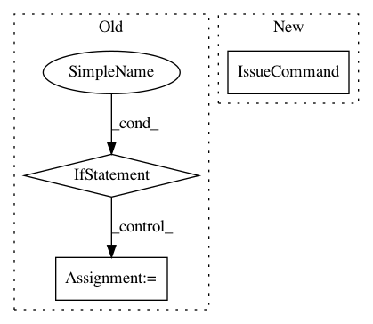

a31bd50bfcb9fd11fb21da92dac7ff6a47791d8a,perfkitbenchmarker/vm_util.py,,SSHKeyGen,#,161
Before Change
stderr=subprocess.PIPE)
create_process.communicate()
if not os.path.isfile(GetCertPath()):
create_cmd = ["openssl",
"req",
"-x509",
"-new",
"-out",
PrependTempDir(CERT_FILE),
"-key",
PrependTempDir(PRIVATE_KEYFILE)]
shell_value = RunningOnWindows()
create_process = subprocess.Popen(create_cmd,
shell=shell_value,
stdout=subprocess.PIPE,
stderr=subprocess.PIPE,
stdin=subprocess.PIPE)
input_bytes = ("\n" * 7).encode("utf8")
create_process.communicate(input=input_bytes)
def GetPrivateKeyPath():
return PrependTempDir(PRIVATE_KEYFILE)
After Change
"-m", "PEM",
"-q",
"-f", PrependTempDir(PRIVATE_KEYFILE)]
IssueCommand(create_cmd)
def GetPrivateKeyPath():
return PrependTempDir(PRIVATE_KEYFILE)
In pattern: SUPERPATTERN
Frequency: 3
Non-data size: 3
Instances
Project Name: GoogleCloudPlatform/PerfKitBenchmarker
Commit Name: a31bd50bfcb9fd11fb21da92dac7ff6a47791d8a
Time: 2019-12-11
Author: pclay@google.com
File Name: perfkitbenchmarker/vm_util.py
Class Name:
Method Name: SSHKeyGen
Project Name: GoogleCloudPlatform/PerfKitBenchmarker
Commit Name: d6ef26173d1f2e65ec65570683e8ca43d054c8d4
Time: 2016-09-20
Author: nlavine@google.com
File Name: perfkitbenchmarker/providers/azure/azure_disk.py
Class Name: AzureDisk
Method Name: _Create
Project Name: GoogleCloudPlatform/PerfKitBenchmarker
Commit Name: d6ef26173d1f2e65ec65570683e8ca43d054c8d4
Time: 2016-09-20
Author: nlavine@google.com
File Name: perfkitbenchmarker/providers/azure/azure_disk.py
Class Name: AzureDisk
Method Name: _Exists